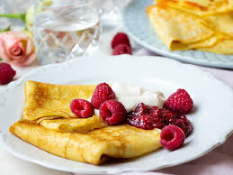

Gör traditionella tunna pannkakor genom att blanda mjöl, mjölk och ägg och lite salt till en jämn smet. Stek smeten till tunna och smarriga pannkakor och servera med en söt sylt.

Ingredienser
- 2 ½ dl vetemjöl
- ½ tsk salt
- 6 dl mjölk
- 3 ägg
- 3 msk smör
- sylt, bär eller frukt till servering
Instruktioner
- Blanda mjöl och salt i en bunke. Vispa i hälften av mjölken och vispa till en slät smet. Vispa i resten av mjölken och äggen.
- Smält smöret i stekpannan och vispa ner i smeten. Stek tunna pannkakor av smeten i en stek- eller pannkakspanna.
- Servera med sylt, bär eller frukt.